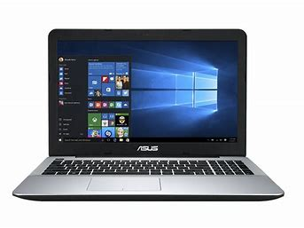

Salut les amis !
Aujourd'hui, je suis super excitée de partager avec vous ma découverte récente : le HTML. Oui, je sais, ça fait un moment que ça existe, mais je me suis enfin lancée dedans ! C'est comme si j'avais trouvé un trésor caché dans le monde numérique.
Alors, le HTML,
c'est un peu comme la structure de base de tout site web.
Vous savez, c'est le langage qui donne vie à toutes ces pages magnifiques que nous aimons parcourir. Les balises sont un peu comme les ingrédients d'une recette : elles indiquent où doit aller le titre, l'image, le texte, et tout ce qui rend un site captivant.
Mais pour maîtriser ce langage, trois qualités sont essentielles:
- de la patience
- une bonne mémoire
- maitriser sa consommation de cafeine
Alors, pour tous mes followers qui souhaitent donner une touche personnelle à leur site, le HTML est une compétence incontournable. Croyez-moi, je suis conquise, et je suis sûre que vous le serez aussi.
Allez, on se lance dans cette aventure numérique ensemble !
